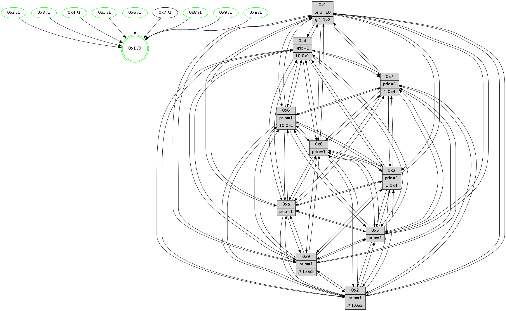

>> << IDX [start] -100 -25 -5 +0 +5 +25 +100 [830.33052516]
 Previous packets
----------------------------------------------------------------------
825.601736 beacon01(faad) #0 coord=01,02,03,04,05,06,07,0a,09,08 cycle=688.0ms assoc
-- color-indic=1 64 e5 8b
825.611717 beacon02(faad) #0 coord=01,02,03,04,05,06,07,0a,09,08 cycle=688.0ms assoc 64 76 ba
825.621718 beacon03(faad) #0 coord=01,02,03,04,05,06,07,0a,09,08 cycle=688.0ms assoc 64 0c f7
825.631719 beacon04(faad) #0 coord=01,02,03,04,05,06,07,0a,09,08 cycle=688.0ms assoc 64 7b 1d
825.641717 beacon05(faad) #0 coord=01,02,03,04,05,06,07,0a,09,08 cycle=688.0ms assoc 64 01 50
825.651720 beacon06(faad) #0 coord=01,02,03,04,05,06,07,0a,09,08 cycle=688.0ms assoc 64 8f 87
825.661718 beacon07(faad) #0 coord=01,02,03,04,05,06,07,0a,09,08 cycle=688.0ms assoc 64 f5 ca
825.671723 beacon0a(faad) #0 coord=01,02,03,04,05,06,07,0a,09,08 cycle=688.0ms assoc 64 84 c1
825.681727 beacon09(faad) #0 coord=01,02,03,04,05,06,07,0a,09,08 cycle=688.0ms assoc 64 0a 16
825.691724 beacon08(faad) #0 coord=01,02,03,04,05,06,07,0a,09,08 cycle=688.0ms assoc 64 70 5b
825.703272 [Hello(7): seq=528 sym=2,3,5,6,4,8,9,10,1 sysInfo=hasWarning stat=2:7,12,7,10/3:6,0,3,9/5:2,13,6,14/6:4,12,4,3/4:9,5,0,0/8:0,0,0,0/9:15,9,4,9/10:5,6,6,8/1:14,13,10,0]
825.706026 [STC(6)->1 #0.94 tree-change,inconsistent-stability,stable,to-color d=1]
825.707270 [Color(1) seq=209 @0:0 prio=10 >>1.@2,1.@3,1.@6]
825.709996 [TreeStatus(6)-.->1 #0.94 tree-change,inconsistent-stability,stable child=1]
825.711082 [Hello(9): seq=472 sym=2,5,3,4,7,6,8,10,1 sysInfo=hasWarning stat=2:13,6,12,0/5:13,2,12,2/3:13,0,11,9/4:6,3,12,6/7:3,15,5,7/6:14,3,0,6/8:7,12,7,1/10:4,1,3,0/1:12,3,12,1]
825.714945 [STC(2)->1 #0.94 tree-change,inconsistent-stability,stable,to-color d=1]
825.717322 [Hello(8): seq=472 sym=5,2,3,4,7,6,9,10,1 sysInfo=hasWarning stat=5:2,2,3,10/2:13,12,12,2/3:0,7,0,9/4:7,2,14,6/7:8,10,2,9/6:0,9,12,8/9:8,12,0,0/10:3,2,1,0/1:5,12,9,0]
825.720858 [Hello(10): seq=461 sym=6,2,3,8,9,5,7,4,1 sysInfo=hasWarning stat=6:11,9,1,3/2:4,13,12,2/3:11,10,10,6/8:2,4,13,8/9:9,12,1,0/5:6,0,2,11/7:11,14,1,5/4:14,6,7,6/1:1,12,13,1]
825.724948 [STC(10)->1 #0.94 tree-change,inconsistent-stability,stable,to-color d=1]
825.726793 [STC(8)->1 #0.94 tree-change,inconsistent-stability,stable,to-color d=1]
825.728166 [TreeStatus(10)-.->1 #0.94 tree-change,inconsistent-stability,stable child=1]
825.729624 [Hello(4): seq=528 sym=5,7,6,2,3,9,8,10,1 sysInfo= stat=5:6,6,0,9/7:12,11,1,4/6:4,14,0,8/2:5,5,12,8/3:4,6,12,5/9:5,12,0,3/8:3,7,0,9/10:12,5,4,7/1:7,14,12,1]
825.733422 [STC(4)->1 #0.94 tree-change,inconsistent-stability,stable,to-color d=1]
825.734879 [Color(3) seq=169 @0:0 prio=1 >1.@4,1.@6,1.@7]
825.737553 [STC(9)->1 #0.94 tree-change,inconsistent-stability,stable,to-color d=1]
825.740155 [TreeStatus(9)-.->1 #0.94 tree-change,inconsistent-stability,stable child=1]
825.742920 [TreeStatus(8)-.->1 #0.94 tree-change,inconsistent-stability,stable child=1]
825.745643 [Color(9) seq=177 @0:0 prio=1 >>1.@2,1.@3,1.@6]
----------------------------------------------------------------------
826.389868 beacon01(faad) #0 coord=01,02,03,04,05,06,07,0a,09,08 cycle=688.0ms assoc
-- color-indic=1 64 21 85
826.399851 beacon02(faad) #0 coord=01,02,03,04,05,06,07,0a,09,08 cycle=688.0ms assoc 64 b2 b4
826.409852 beacon03(faad) #0 coord=01,02,03,04,05,06,07,0a,09,08 cycle=688.0ms assoc 64 c8 f9
826.419851 beacon04(faad) #0 coord=01,02,03,04,05,06,07,0a,09,08 cycle=688.0ms assoc 64 bf 13
826.429851 beacon05(faad) #0 coord=01,02,03,04,05,06,07,0a,09,08 cycle=688.0ms assoc 64 c5 5e
826.439851 beacon06(faad) #0 coord=01,02,03,04,05,06,07,0a,09,08 cycle=688.0ms assoc 64 4b 89
826.449852 beacon07(faad) #0 coord=01,02,03,04,05,06,07,0a,09,08 cycle=688.0ms assoc 64 31 c4
826.459857 beacon0a(faad) #0 coord=01,02,03,04,05,06,07,0a,09,08 cycle=688.0ms assoc 64 40 cf
826.479857 beacon08(faad) #0 coord=01,02,03,04,05,06,07,0a,09,08 cycle=688.0ms assoc 64 b4 55
826.491371 [Hello(3): seq=529 sym=1,7,6,2,4,8,9,10,5 sysInfo= stat=1:5,11,15,0/7:9,8,11,5/6:1,0,0,0/2:7,11,14,8/4:0,7,8,5/8:13,3,11,5/9:4,0,0,8/10:8,3,14,7/5:0,11,11,9]
826.495345 [Color(7) seq=148 @0:0 prio=1 >1.@4,1.@6]
826.499233 [Hello(2): seq=525 sym=4,5,7,6,3,9,8,10,1 sysInfo=hasWarning stat=4:4,8,13,4/5:7,10,12,3/7:15,5,3,7/6:4,11,0,6/3:14,3,11,4/9:12,3,13,1/8:12,4,11,7/10:6,10,13,7/1:15,9,8,1]
826.503341 [Color(2) seq=174 @0:0 prio=1 >>1.@2,1.@3,1.@6]
826.507894 [Color(4) seq=147 @0:0 prio=1 >10.@1,1.@2,1.@3,1.@6]
826.510408 [Hello(5): seq=529 sym=7,6,4,3,1,9,8,10,2 sysInfo=hasWarning stat=7:14,6,3,6/6:7,8,3,8/4:11,11,7,5/3:1,13,10,7/1:0,12,12,1/9:4,4,15,1/8:8,0,12,7/10:10,7,9,2/2:4,11,4,0]
826.513547 [Color(5) seq=182 @0:0 prio=1]
826.516044 [Hello(1): seq=438 sym=4,2,9,5,10,3,8,6,7 sysInfo=coloring-mode-on,ColoringModeRequestCalled stat=4:11,11,3,0/2:7,15,12,9/9:8,6,15,2/5:8,12,5,3/10:5,9,10,9/3:3,14,9,0/8:14,9,11,9/6:3,3,10,8/7:15,4,0,11]
----------------------------------------------------------------------
827.177998 beacon01(faad) #0 coord=01,02,03,04,05,06,07,0a,09,08 cycle=688.0ms assoc
-- color-indic=1 64 9d 80
827.187979 beacon02(faad) #0 coord=01,02,03,04,05,06,07,0a,09,08 cycle=688.0ms assoc 64 0e b1
827.197982 beacon03(faad) #0 coord=01,02,03,04,05,06,07,0a,09,08 cycle=688.0ms assoc 64 74 fc
827.207982 beacon04(faad) #0 coord=01,02,03,04,05,06,07,0a,09,08 cycle=688.0ms assoc 64 03 16
827.217981 beacon05(faad) #0 coord=01,02,03,04,05,06,07,0a,09,08 cycle=688.0ms assoc 64 79 5b
827.227981 beacon06(faad) #0 coord=01,02,03,04,05,06,07,0a,09,08 cycle=688.0ms assoc 64 f7 8c
827.237981 beacon07(faad) #0 coord=01,02,03,04,05,06,07,0a,09,08 cycle=688.0ms assoc 64 8d c1
827.247987 beacon0a(faad) #0 coord=01,02,03,04,05,06,07,0a,09,08 cycle=688.0ms assoc 64 fc ca
827.257986 beacon09(faad) #0 coord=01,02,03,04,05,06,07,0a,09,08 cycle=688.0ms assoc 64 72 1d
827.267986 beacon08(faad) #0 coord=01,02,03,04,05,06,07,0a,09,08 cycle=688.0ms assoc 64 08 50
827.279520 [Hello(4): seq=529 sym=5,7,6,2,3,9,8,10,1 sysInfo= stat=5:7,7,0,9/7:12,11,1,4/6:4,14,0,8/2:5,5,12,8/3:5,7,12,5/9:5,13,1,4/8:3,7,0,10/10:12,5,4,7/1:8,14,12,1]
827.282538 [Hello(7): seq=529 sym=2,3,5,6,4,8,9,10,1 sysInfo=hasWarning stat=2:8,13,8,10/3:7,1,3,9/5:3,14,6,14/6:4,12,5,4/4:10,6,1,0/8:1,0,1,1/9:0,10,5,10/10:6,6,7,9/1:15,14,10,0]
827.285252 [Color(1) seq=210 @0:0 prio=10 >>1.@2,1.@3,1.@6]
827.286862 [Hello(9): seq=473 sym=2,5,3,4,7,6,8,10,1 sysInfo=hasWarning stat=2:14,7,12,0/5:14,3,12,2/3:14,0,11,9/4:6,4,12,6/7:4,0,5,7/6:14,3,1,6/8:7,12,7,1/10:4,1,3,0/1:13,4,12,1]
827.290969 [Color(9) seq=178 @0:0 prio=1 >>1.@2,1.@3,1.@6]
827.293204 [Color(6) seq=172 @0:0 prio=1]
827.294714 [Hello(8): seq=473 sym=5,2,3,4,7,6,9,10,1 sysInfo=hasWarning stat=5:3,3,3,10/2:14,13,12,2/3:1,7,0,9/4:7,3,14,6/7:8,10,2,9/6:1,9,12,8/9:8,13,0,0/10:3,2,1,0/1:6,12,9,0]
827.298149 [Hello(10): seq=462 sym=6,2,3,8,9,5,7,4,1 sysInfo=hasWarning stat=6:11,9,1,3/2:5,14,12,2/3:12,11,10,6/8:2,4,13,9/9:9,13,2,1/5:7,1,2,11/7:11,15,1,5/4:15,7,8,6/1:2,12,13,1]
827.301947 [Color(10) seq=150 @0:0 prio=1]
827.303549 [Color(8) seq=185 @0:0 prio=1]
----------------------------------------------------------------------
827.966132 beacon01(faad) #0 coord=01,02,03,04,05,06,07,0a,09,08 cycle=688.0ms assoc
-- color-indic=1 64 a9 98
827.976113 beacon02(faad) #0 coord=01,02,03,04,05,06,07,0a,09,08 cycle=688.0ms assoc 64 3a a9
827.986113 beacon03(faad) #0 coord=01,02,03,04,05,06,07,0a,09,08 cycle=688.0ms assoc 64 40 e4
827.996114 beacon04(faad) #0 coord=01,02,03,04,05,06,07,0a,09,08 cycle=688.0ms assoc 64 37 0e
828.006113 beacon05(faad) #0 coord=01,02,03,04,05,06,07,0a,09,08 cycle=688.0ms assoc 64 4d 43
828.016115 beacon06(faad) #0 coord=01,02,03,04,05,06,07,0a,09,08 cycle=688.0ms assoc 64 c3 94
828.026116 beacon07(faad) #0 coord=01,02,03,04,05,06,07,0a,09,08 cycle=688.0ms assoc 64 b9 d9
828.036119 beacon0a(faad) #0 coord=01,02,03,04,05,06,07,0a,09,08 cycle=688.0ms assoc 64 c8 d2
828.056119 beacon08(faad) #0 coord=01,02,03,04,05,06,07,0a,09,08 cycle=688.0ms assoc 64 3c 48
828.068619 [Hello(6): seq=530 sym=2,3,5,4,7,9,8,10,1 sysInfo= stat=2:0,1,10,7/3:14,13,2,7/5:11,13,3,11/4:12,0,14,0/7:3,9,14,3/9:14,15,3,1/8:12,9,1,8/10:12,1,7,8/1:11,12,8,1]
828.071339 [Color(7) seq=149 @0:0 prio=1 >1.@4,1.@6]
828.076936 [Hello(1): seq=439 sym=4,2,9,5,10,3,8,6,7 sysInfo=coloring-mode-on,ColoringModeRequestCalled stat=4:12,11,3,0/2:7,15,12,9/9:9,7,15,2/5:8,12,5,3/10:5,10,10,9/3:3,15,9,0/8:15,10,11,9/6:3,4,10,8/7:15,4,0,11]
828.080549 [Color(5) seq=183 @0:0 prio=1]
828.084549 [Color(4) seq=148 @0:0 prio=1 >10.@1,1.@2,1.@3,1.@6]
828.089211 [Hello(2): seq=526 sym=4,5,7,6,3,9,8,10,1 sysInfo=hasWarning stat=4:5,9,13,4/5:8,11,12,3/7:0,5,3,7/6:4,12,0,6/3:15,3,11,4/9:13,4,13,1/8:13,5,11,7/10:6,11,13,7/1:0,10,8,1]
828.093294 [Color(2) seq=175 @0:0 prio=1 >>1.@2,1.@3,1.@6]
----------------------------------------------------------------------
828.754265 beacon01(faad) #0 coord=01,02,03,04,05,06,07,0a,09,08 cycle=688.0ms assoc
-- color-indic=1 64 15 9d
828.764247 beacon02(faad) #0 coord=01,02,03,04,05,06,07,0a,09,08 cycle=688.0ms assoc 64 86 ac
828.774247 beacon03(faad) #0 coord=01,02,03,04,05,06,07,0a,09,08 cycle=688.0ms assoc 64 fc e1
828.784247 beacon04(faad) #0 coord=01,02,03,04,05,06,07,0a,09,08 cycle=688.0ms assoc 64 8b 0b
828.794249 beacon05(faad) #0 coord=01,02,03,04,05,06,07,0a,09,08 cycle=688.0ms assoc 64 f1 46
828.804248 beacon06(faad) #0 coord=01,02,03,04,05,06,07,0a,09,08 cycle=688.0ms assoc 64 7f 91
828.814249 beacon07(faad) #0 coord=01,02,03,04,05,06,07,0a,09,08 cycle=688.0ms assoc 64 05 dc
828.824253 beacon0a(faad) #0 coord=01,02,03,04,05,06,07,0a,09,08 cycle=688.0ms assoc 64 74 d7
828.834252 beacon09(faad) #0 coord=01,02,03,04,05,06,07,0a,09,08 cycle=688.0ms assoc 64 fa 00
828.844252 beacon08(faad) #0 coord=01,02,03,04,05,06,07,0a,09,08 cycle=688.0ms assoc 64 80 4d
828.856113 [Hello(4): seq=530 sym=5,7,6,2,3,9,8,10,1 sysInfo= stat=5:7,7,0,9/7:13,11,1,4/6:5,15,0,8/2:6,6,12,8/3:5,7,12,5/9:6,14,1,4/8:4,8,0,10/10:13,6,4,7/1:8,15,12,1]
828.858846 [Color(6) seq=173 @0:0 prio=1 >10.@1,1.@2,1.@3,1.@4]
828.860710 [Hello(9): seq=474 sym=2,5,3,4,7,6,8,10,1 sysInfo=hasWarning stat=2:15,8,12,0/5:15,4,12,2/3:14,1,11,9/4:7,5,12,6/7:5,1,5,7/6:15,4,1,6/8:8,13,7,1/10:4,2,3,0/1:14,4,12,1]
828.863526 [Color(9) seq=179 @0:0 prio=1 >>1.@2,1.@3,1.@6]
828.865820 [Color(3) seq=171 @0:0 prio=1 >1.@4,1.@6,1.@7]
828.869652 [Hello(8): seq=474 sym=5,2,3,4,7,6,9,10,1 sysInfo=hasWarning stat=5:4,4,3,10/2:15,14,12,2/3:1,7,0,9/4:8,4,14,6/7:8,11,2,9/6:2,9,12,8/9:8,13,0,0/10:3,2,1,0/1:7,12,9,0]
828.872833 [Hello(7): seq=530 sym=2,3,5,6,4,8,9,10,1 sysInfo=hasWarning stat=2:9,14,8,10/3:8,1,3,9/5:3,15,6,14/6:5,13,5,4/4:10,7,1,0/8:2,1,1,1/9:1,11,5,10/10:7,7,7,9/1:0,15,10,0]
828.875496 [STC(1) #0.95 tree-change,inconsistent-stability,stable,to-color d=0]
828.877397 [Color(8) seq=186 @0:0 prio=1]
828.879528 [Hello(10): seq=463 sym=6,2,3,8,9,5,7,4,1 sysInfo=hasWarning stat=6:12,9,1,3/2:6,15,12,2/3:13,11,10,6/8:2,5,13,9/9:9,13,2,1/5:7,2,2,11/7:11,0,1,5/4:0,8,8,6/1:3,12,13,1]
828.882996 [Color(10) seq=151 @0:0 prio=1]
----------------------------------------------------------------------
829.542394 beacon01(faad) #0 coord=01,02,03,04,05,06,07,0a,09,08 cycle=688.0ms assoc
-- color-indic=1 64 d1 93
829.552379 beacon02(faad) #0 coord=01,02,03,04,05,06,07,0a,09,08 cycle=688.0ms assoc 64 42 a2
829.562376 beacon03(faad) #0 coord=01,02,03,04,05,06,07,0a,09,08 cycle=688.0ms assoc 64 38 ef
829.572377 beacon04(faad) #0 coord=01,02,03,04,05,06,07,0a,09,08 cycle=688.0ms assoc 64 4f 05
829.582377 beacon05(faad) #0 coord=01,02,03,04,05,06,07,0a,09,08 cycle=688.0ms assoc 64 35 48
829.592377 beacon06(faad) #0 coord=01,02,03,04,05,06,07,0a,09,08 cycle=688.0ms assoc 64 bb 9f
829.602376 beacon07(faad) #0 coord=01,02,03,04,05,06,07,0a,09,08 cycle=688.0ms assoc 64 c1 d2
829.612381 beacon0a(faad) #0 coord=01,02,03,04,05,06,07,0a,09,08 cycle=688.0ms assoc 64 b0 d9
829.622382 beacon09(faad) #0 coord=01,02,03,04,05,06,07,0a,09,08 cycle=688.0ms assoc 64 3e 0e
829.632384 beacon08(faad) #0 coord=01,02,03,04,05,06,07,0a,09,08 cycle=688.0ms assoc 64 44 43
829.643969 [STC(9)->1 #0.95 tree-change,inconsistent-stability,stable,to-color d=1]
829.645210 [STC(7)->1 #0.95 to-color d=1]
829.647827 [Hello(6): seq=531 sym=2,3,5,4,7,9,8,10,1 sysInfo= stat=2:1,2,10,7/3:14,14,2,7/5:11,14,3,11/4:13,1,14,0/7:4,10,14,3/9:15,0,3,1/8:13,10,1,8/10:13,2,7,8/1:12,12,9,1]
829.650639 [Hello(5): seq=531 sym=7,6,4,3,1,9,8,10,2 sysInfo=hasWarning stat=7:0,6,3,6/6:8,10,3,8/4:13,12,7,5/3:2,14,10,7/1:1,13,13,1/9:6,6,15,1/8:10,2,12,7/10:12,9,9,2/2:5,12,4,0]
829.653310 [Hello(1): seq=440 sym=4,2,9,5,10,3,8,6,7 sysInfo=coloring-mode-on,ColoringModeRequestCalled stat=4:13,12,3,0/2:8,0,12,9/9:9,7,15,2/5:8,13,5,3/10:5,11,10,9/3:3,15,9,0/8:15,10,11,9/6:3,4,10,8/7:15,4,0,11]
829.658331 [Hello(3): seq=531 sym=1,7,6,2,4,8,9,10,5 sysInfo= stat=1:7,12,0,0/7:10,8,11,5/6:1,0,0,0/2:9,13,14,8/4:2,9,8,5/8:14,5,11,5/9:4,0,0,8/10:8,5,14,7/5:1,13,11,9]
829.661084 [STC(4)->1 #0.95 tree-change,inconsistent-stability,stable,to-color d=1]
829.662773 [STC(3)->1 #0.95 tree-change,inconsistent-stability,stable,to-color d=1]
829.664170 [STC(6)->1 #0.95 tree-change,inconsistent-stability,stable,to-color d=1]
829.665750 [Hello(2): seq=527 sym=4,5,7,6,3,9,8,10,1 sysInfo=hasWarning stat=4:6,9,13,4/5:8,11,12,3/7:1,5,3,7/6:5,13,0,6/3:15,4,11,4/9:14,5,13,1/8:14,6,11,7/10:7,12,13,7/1:0,10,9,1]
829.668281 [Color(4) seq=149 @0:0 prio=1 >10.@1,1.@2,1.@3,1.@6]
829.670151 [STC(2)->1 #0.95 tree-change,inconsistent-stability,stable,to-color d=1]
829.671787 [Color(2) seq=176 @0:0 prio=1 >>1.@2,1.@3,1.@4]
829.675297 [STC(5)->1 #0.95 tree-change,inconsistent-stability,stable,to-color d=1]
829.678232 [Color(5) seq=184 @0:0 prio=1]